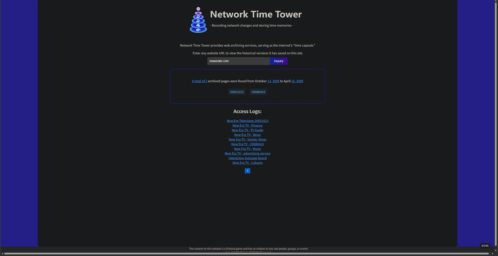

Web Development
Responsive websites, semantic HTML, modern CSS and JavaScript applications.
A collection of web development, game design, interactive media and UX projects completed through university coursework, personal experimentation and self‑directed learning.
One of my favourite projects explores how digital storytelling can become interactive through user choice. The project combines web development with narrative design principles to create a branching story experience.
The goal was to investigate how player agency can influence engagement and emotional investment in a digital narrative.

Responsive websites, semantic HTML, modern CSS and JavaScript applications.
Unity prototypes exploring gameplay mechanics, interaction systems and level design.
Wireframing, user research and interface design focused on usability.
Understanding user needs, project goals and technical requirements.
Planning layouts, interactions and user flows before development begins.
Developing solutions using modern web and interactive media technologies.
Testing, iterating and improving usability and performance.
Investigating game mechanics that support learning and engagement.
Exploring ways to communicate complex information through interactive graphics.
Developing tools that help improve website accessibility and usability.
If you'd like to discuss a project, collaborate, or learn more about my work, feel free to get in touch.
Contact Me →